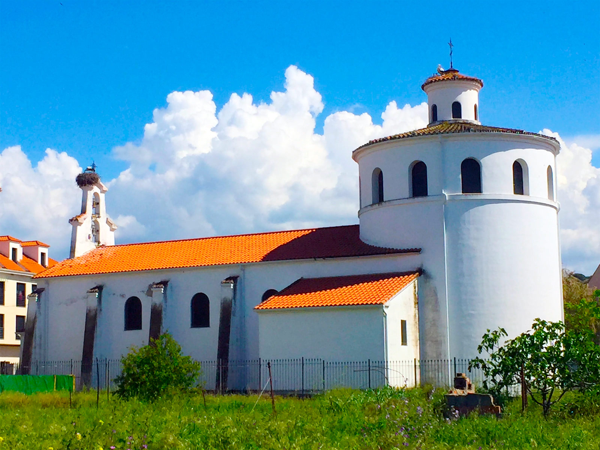
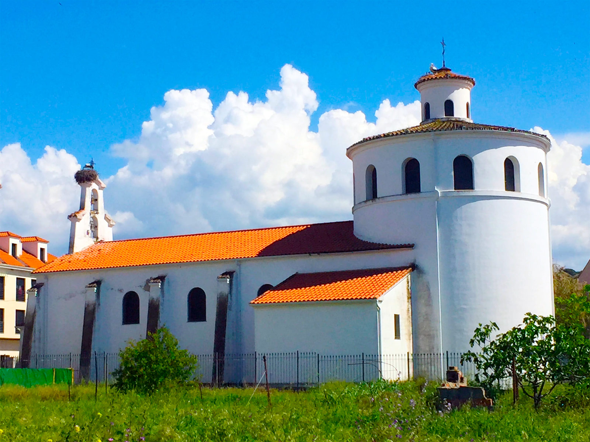
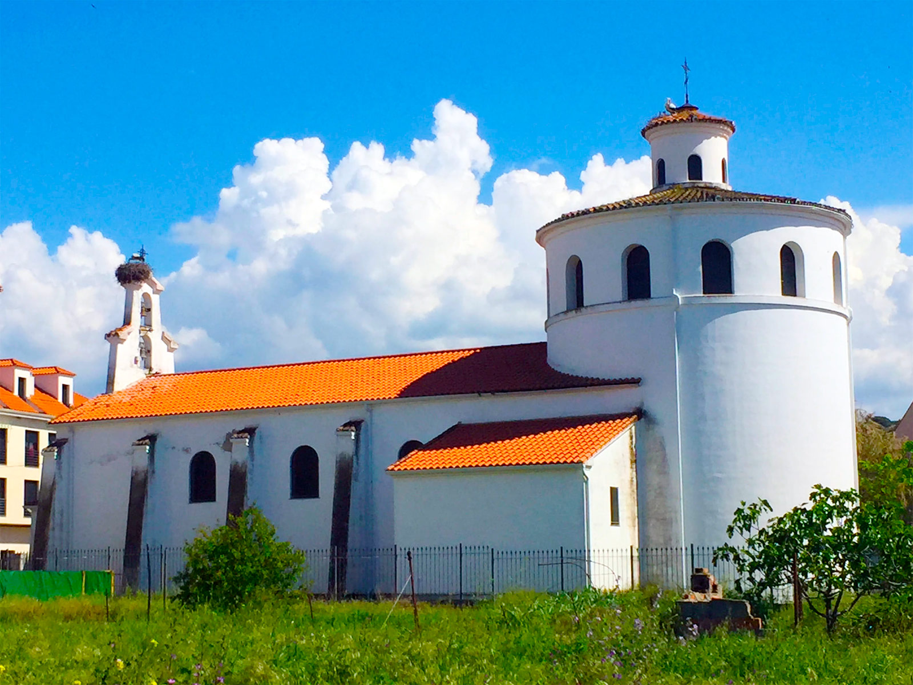

ESTE ESPACIO está destinado a imágenes vuestras de nuestro entorno. Envíanos tu fotografía a info@puntodeencuentronavalmoral.es
Las imágenes elegidas pasarán a formar parte de esta colección ayudando a promover la cultura y tradiciones de nuestro entorno. Recuerda añadir el autor (nombre o seudónimo) y la descripción.
¡Gracias por formar parte de esta familia tan diversa y única!
